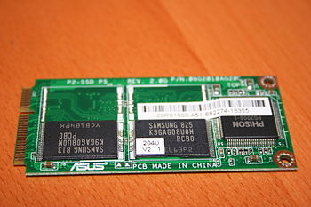

La unidad de estado sólido, dispositivo de estado sólido o SSD (acrónimo inglés de Solid-State Drive) es un tipo de dispositivo de almacenamiento de datos que utiliza memoria no volátil, como la memoria flash, para almacenar datos, en lugar de los platos o discos magnéticos de las unidades de discos duros (HDD) convencionales.
En comparación con los discos duros tradicionales, las unidades de estado sólido son menos sensibles a los golpes, son prácticamente inaudibles y tienen un menor tiempo de  acceso y de latencia. Las SSD hacen uso de la misma interfaz que los discos duros por lo que son fácilmente intercambiables sin tener que recurrir a adaptadores otarjetas de expansión para compatibilizarlos con el equipo.
A partir de 2010, la mayoría de los SSD utilizan memoria flash basada en puertas NAND, que retiene los datos sin alimentación eléctrica. Para aplicaciones que requieren acceso rápido, pero no necesariamente la persistencia de datos después de la pérdida de potencia, los SSD pueden ser construidos a partir de memoria de acceso aleatorio(RAM). Estos dispositivos pueden emplear fuentes de alimentación independientes, como baterías, para mantener los datos después de la desconexión de la corriente eléctrica.1
Se han desarrollado dispositivos que combinan ambas tecnologías, es decir, discos duros y memorias flash, que se denominan "discos duros híbridos" (HHD), que intentan aunar capacidad y velocidad a precios inferiores al SSD.
Se han desarrollado dispositivos que combinan ambas tecnologías, es decir, discos duros y memorias flash, que se denominan "discos duros híbridos" (HHD), que intentan aunar capacidad y velocidad a precios inferiores al SSD.
Una memoria de estado sólido es un dispositivo de almacenamiento secundario hecho con componentes electrónicos en estado sólido pensado para utilizarse en equipos informáticos en sustitución de una unidad de disco duro convencional, como memoria auxiliar o para crear unidades híbridas compuestas por SSD y disco duro.
Consta de una memoria no volátil, en vez de los platos giratorios y cabezal de las unidades de disco duro convencionales. Al no tener piezas móviles, una unidad de estado sólido reduce drásticamente el tiempo de búsqueda, latencia y otros, diferenciándose así de los discos duros magnéticos.
Al ser inmune a las vibraciones externas, es especialmente apto para vehículos, computadoras portátiles, etcétera.
SSD basados en RAM
Habría que remontarse a la década de 1950 cuando se utilizaban dos tecnologías denominadas memoria de núcleo magnético y CCROS. Estas memorias auxiliares surgieron durante la época en la que se hacía uso del tubo de vacío, pero con la introducción en el mercado de las memorias de tambor, más asequibles, no se continuaron desarrollando. Durante los años 70 y 80, se aplicaron en memorias fabricadas con semiconductores. Sin embargo, su precio era tan prohibitivo que tuvieron muy poca aceptación, incluso en el mercado de los superordenadores.
En 1978, Texas memory presentó una unidad de estado sólido de 16 KiB basada en RAM para los equipos de las petroleras. Al año siguiente, StorageTek desarrolló el primer tipo de unidad de estado sólido moderna. En 1983, se presentó el Sharp PC-5000, haciendo gala de 128 cartuchos de almacenamiento en estado sólido basado en memoria de burbuja. En septiembre de 1986, Santa Clara Systems presentó el BATRAM, que constaba de 4 MiB ampliables a 20 MiB usando módulos de memoria; dicha unidad contenía una pila recargable para conservar los datos cuando no estaba en funcionamiento2.